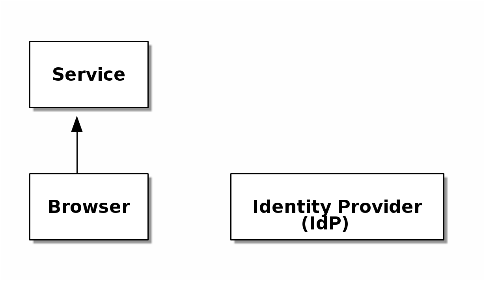
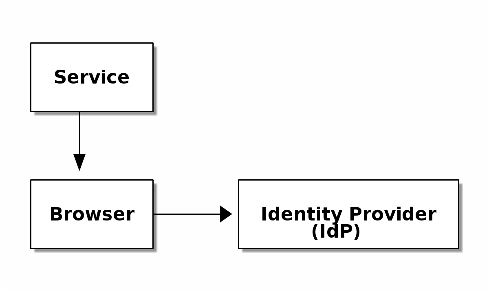
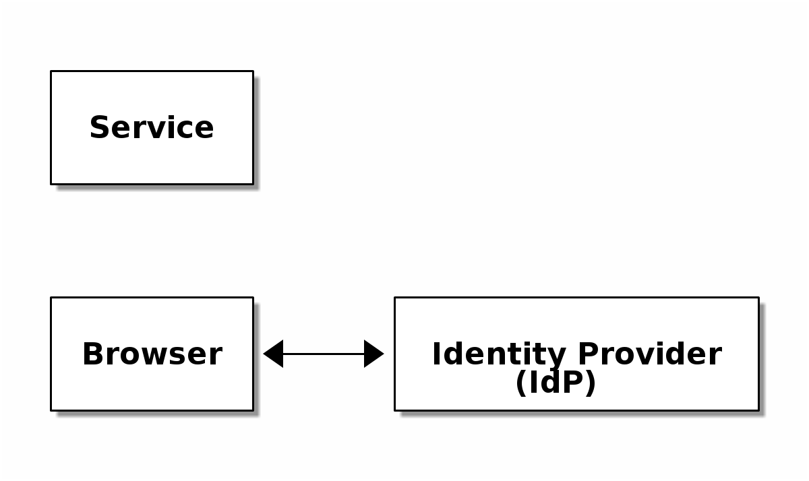
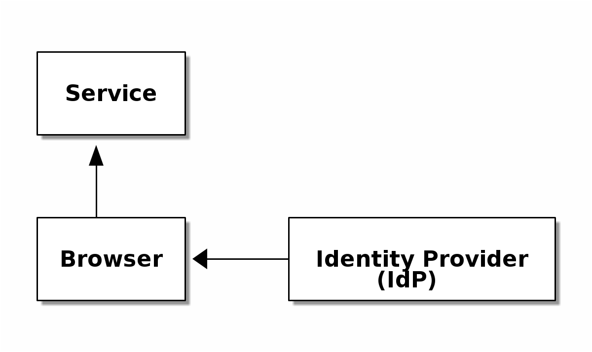
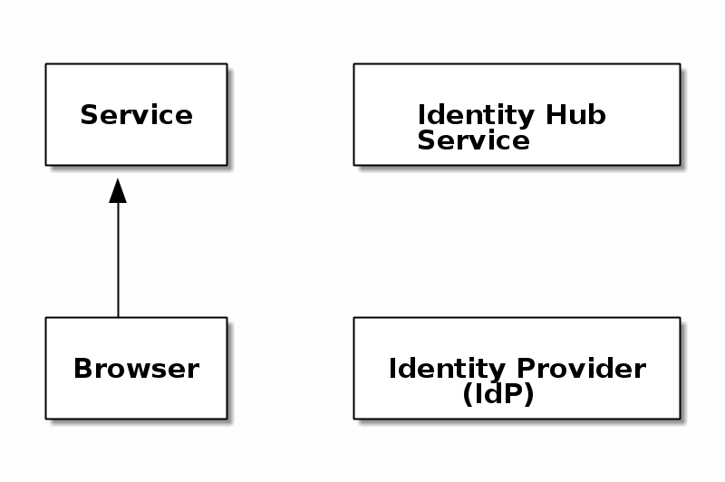
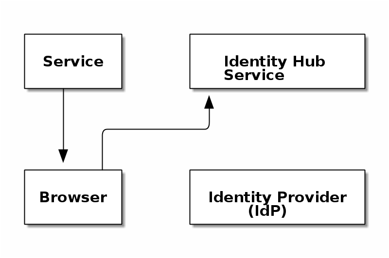
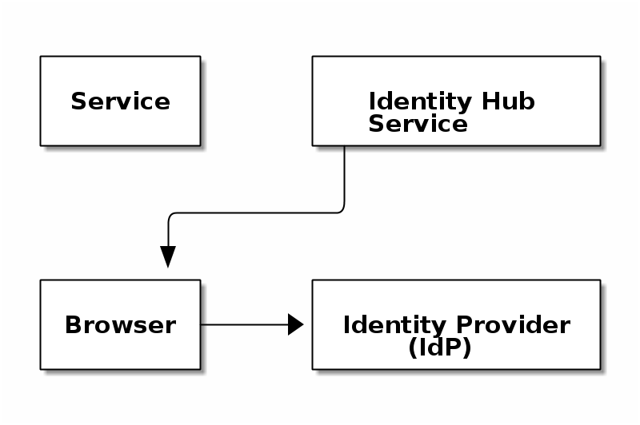
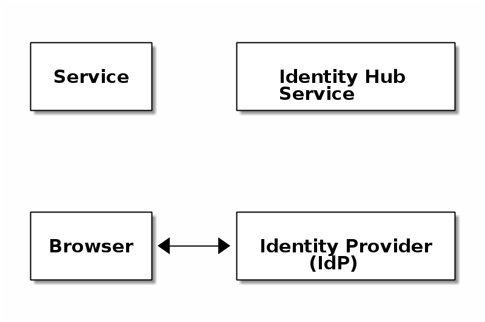
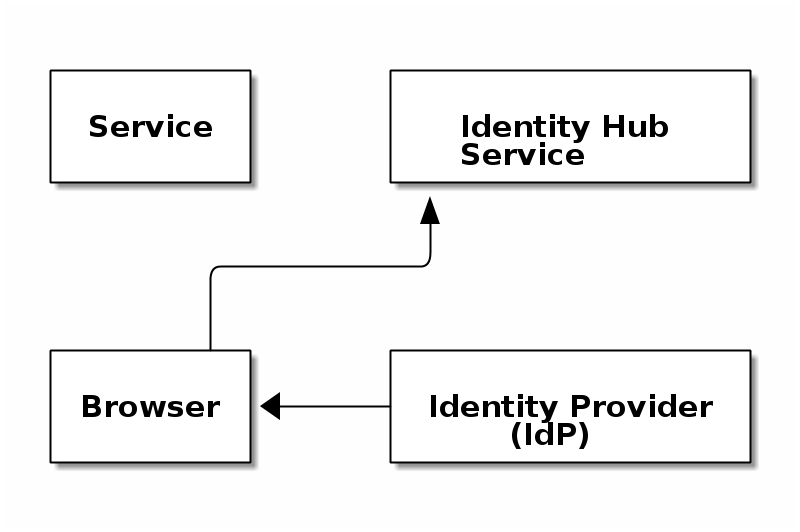
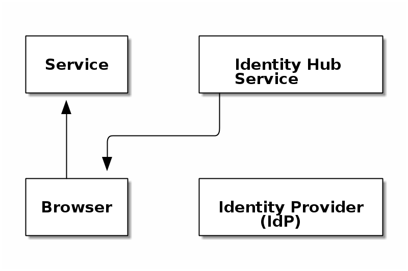

Introduction to web auth
eg OAuth, SAML, OpenID Connect
User requests to use service

Service redirects user to IdP with authentication request

User authenticates with IdP

IdP redirects user to service with signed response

User requests to use service

Service redirects user to Identity Hub Service with authentication request

Hub redirects user to selected IdP with authentication request

User authenticates with IdP

IdP redirects user back to hub with signed response

Hub redirects user back to service with signed response
